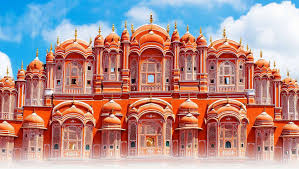
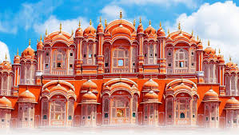

Welcome to Jaipur
dicover new places with us, adventure awaits
discover more
Rajasthan's beautiful Pink City Jaipur, was the stronghold of a clan of rulers whose three hill forts and series of palaces in the city are important attractions.
Known as the Pink City because of the colour of the stone used exclusively in the walled city, Jaipur's bazaars sell embroidered leather shoes, blue pottery, tie and dye scarves and other exotic wares. Western Rajasthan itself forms a convenient circuit, in the heart of the Thar desert which has shaped its history, lifestyles and architecture.
 

Jaipur gets its name from its founder Maharaja JaiSingh II (1693-1744) the great warrior and astronomer. He came to power at the age of II on the death of his father Maharaja Bishan Singh. The maharaja was told that his son would achieve greatness and he set out to ensure that Jai Singh Had a good education. He was trained by the best teachers and scholars in art, science, philosophy and military affairs. His scholastic background matched his innate wits When Jai Singh was 15, emperor Aurangzeb summoned hi to court. Jai Singh had contravened the agreement of not waging war against the Marathas in the Deccan. On metting Jai Singh, Aurangazb,clasping his hand in greeting, demanded an explanation.
Maharaja Ram Singh also built Ramgarh lake to supply water to the burgeoning city. Duringh the 19th and 20th centuries the city’s population spread beyondits walls. In 1922 Man Singh II, Jaipur’s Maharaja ascended the throne and it was during his reign that civic buildings like the secretariat, schools, hospitals and other public buildings were built. After independence, Jaipur merged with the states of Jodhpur,Jaisalmer and Bikaner to become the greater Rajasthan union. Man Singh II was bestowed with the title of Rajapramukh and given charge of the new province .The title was later revoked and in 1956, Jaipur became the capital of the state of Rajasthan.